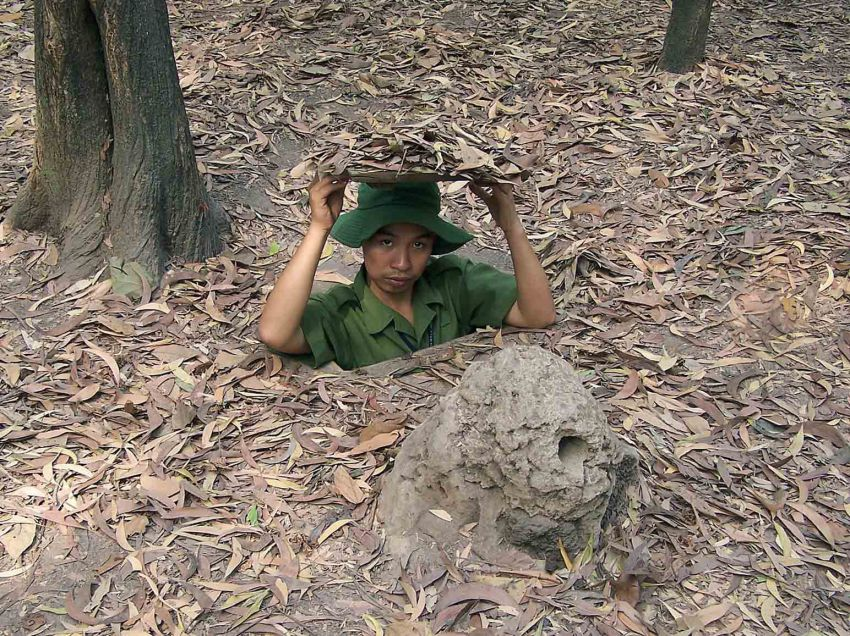

Рис.1 - Рисунок был скомунизжен с другого сайта
-
Вторник. Выбили
немцев
с опушки. Засели в доме лесника.
- Среда. Мощная контратака немцев вынудила нас отавить занятые ранее позиции.
- Четверг. Под покровом ночи смогли снова засесть в доме лесника. Курим "Беломор".
- Пятница. Вернулся лесник и всех выгнал.